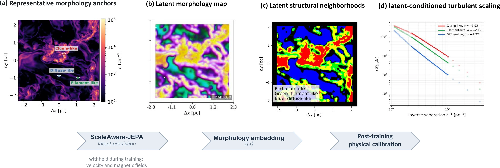

01 · REPRESENTATION LEARNING
ScaleAware-JEPA: toward physical world models
Scale-aware predictive representation learning turns morphology into an inspectable latent state space. In MHD turbulence, learned structural neighborhoods organize dynamical regimes that density amplitude alone does not recover.
self-supervised prediction→latent state space→MHD regimes